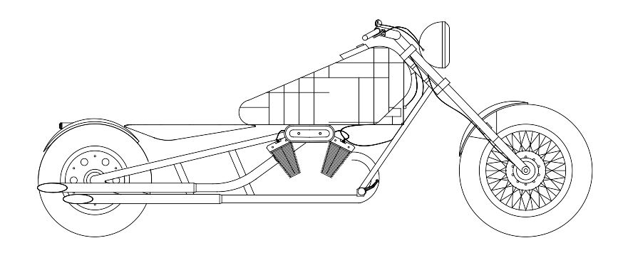
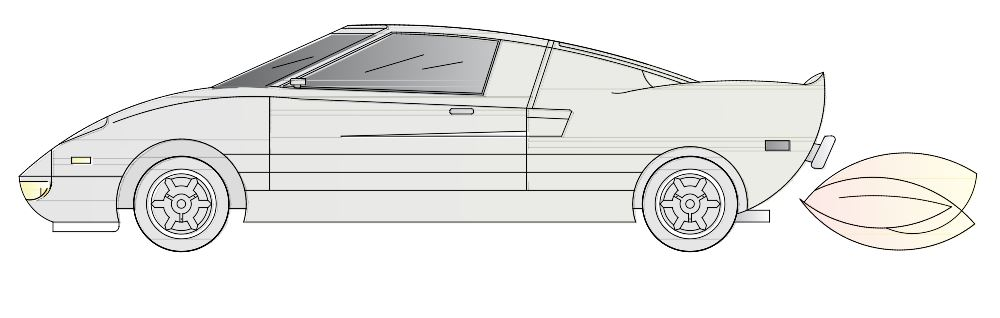
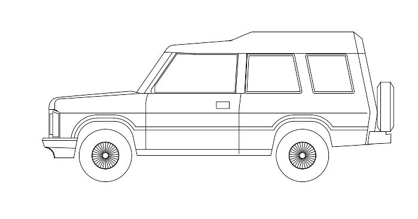
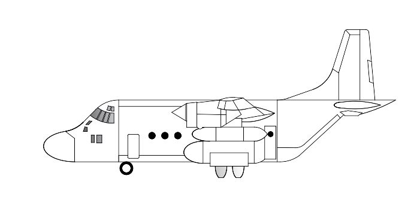

<h1 style="padding-left:4%;padding-top: 2%;padding-bottom: 2%;padding-right: 10%;border-bottom: 1px solid #BDBDBD;">


Side view of some vehicles using AutoCAD


</h1>

AutoCAD 2D


<h2><u>  Ghost Rider </u></h2>



<h2><u>  Ferrari 458 Spider </u></h2>



 <h2><u>  Ford </u></h2>



<h2><u>  Boeing 777 (Qatar Airlines) </u></h2>


